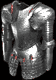

|

靈魂帷幕
鬼魂戰甲
The Spirit Shroud
Ghost Armor
|
防禦: 295 (基本防禦: 102-117)
等級需求: 28
力量需求: 38
耐久度: 20
+150% 防禦強化
無法冰凍
+1 所有技能等級
生命補滿 +10
法術傷害減少 7-11 (變動)
|
|

蛇魔法師之皮
海蛇皮甲
Skin of the Vipermagi
Serpentskin Armor
|
防禦: 279 (基本防禦: 111-126)
等級需求: 29
力量需求: 43
耐久度: 24
+120% 防禦強化
+1 所有技能等級
30% 高速施法速度
法術傷害減少 9-13 (變動)
所有抗性 +20-35 (變動)
|
|

剝皮者之皮
魔皮戰甲
Skin of the Flayed One
Demonhide Armor
|
防禦: 342-397 (變動) (基本防禦: 122-136)
等級需求: 31
力量需求: 50
耐久度: 58
+150-190% 防禦強化 (變動)
恢復耐久度1於 10-20 秒內 (變動)
5-7% 偷取生命 (變動)
恢復生命 +15-25 (變動)
攻擊者受到傷害 15
|
|

擲鐵
攀繞戰甲
Iron Pelt
Trellised Armor
|
防禦: (234-528) - (311-605) (變動) (基本防禦: 138-153)
等級需求: 33
力量需求: 61
耐久度: 157
+50-100% 防禦強化 (變動)
+3-297 防禦 (依角色等級乘3)
傷害減少 15-20 (變動)
法術傷害減少 10-16 (變動)
+25 生命
|
|

靈魂鎔爐
連扣戰甲
Spirit Forge
Linked Mail
|
防禦: 380-449 (變動)
(基本防禦: 158-172)
等級需求: 35
力量需求: 74
耐久度: 26
+120-160% 防禦強化 (變動)
+2-123 生命 (依角色等級決定乘1.25)
火焰抵抗 +5%
增加 20-65 火焰傷害
+15 力量
有凹槽 (2)
+4 照亮範圍
|
|

鴉鳴
提格萊特戰甲
Crow Caw
Tigulated Mail
|
防禦: 477-534 (變動)
(基本防禦: 176-190)
等級需求: 37
力量需求: 86
耐久度: 36
+150-180% 防禦強化 (變動)
15% 增加攻擊速度
15% 快速再度攻擊
35% 撕開傷口機率
+15 敏捷
|
|

都瑞爾的殼
護胸甲
Duriel's Shell
Cuirass
|
防禦: (528-650) - (610-732) (變動) (基本防禦: 188-202)
等級需求: 41
力量需求: 65
耐久度: 150
+160-200% 防禦強化 (變動)
+1-123 防禦 (依角色等級乘1.25)
+1-99 生命 (依角色等級乘1)
火焰抵抗 +20%
閃電抵抗 +20%
毒素抵抗 +20%
冰冷抵抗 +50%
無法冰凍
+15 力量
|
|

謝夫特斯坦布
織網戰甲
Shaftstop
Mesh Armor
|
防禦: 599-684 (變動)
(基本防禦: 198-213)
等級需求: 38
力量需求: 92
耐久度: 45
+160-220% 防禦強化 (變動)
傷害減少 30%
+250 對飛射性武器防禦
+60 生命
|
|

詩寇蒂的憤怒
羅瑟戰甲
Skullder's Ire
Russet Armor
|
防禦: 634-732 (變動)
(基本防禦: 225-243)
等級需求: 42
力量需求: 97
耐久度: 90
+160-200% 防禦強化 (變動)
恢復耐久度1於 4-5 秒內 (變動)
+2-123 % 更佳機率取得魔法物品 (依角色等級乘1.25)
+1 所有技能等級
法術傷害減少 10
|
|

魁黑剛的智慧
法師鎧甲
Que-Hegan's Wisdom
Mage Plate
|
防禦: 628-681 (變動) (基本防禦: 225-261)
等級需求: 51
力量需求: 55
耐久度: 60
+140-160% 防禦強化 (變動)
+1 所有技能等級
+3 法力在每殺死一名敵人之後取得
20% 高速施法速度
20% 快速再度攻擊
法術傷害減少 6-10 (變動)
+15 精力
|
|

排齒
鯊齒戰甲
Toothrow
Sharktooth Armor
|
防禦: 713-888 (變動) (基本防禦: 242-258)
等級需求: 48
力量需求: 103
耐久度: 63
+160-220% 防禦強化 (變動)
+40-60 防禦 (變動)
40% 撕開傷口機率
火焰抵抗 +15%
+10 力量
攻擊者受到傷害 20-40 (變動)
|
|

守護天使
聖堂武士外袍
Guardian Angel
Templar Coat
|
防禦: 770-825 (變動)
(基本防禦: 252-274)
等級需求: 45
力量需求: 118
耐久度: 60
+180-200% 防禦強化 (變動)
+20% 增加格擋率
+30% 快速再度格擋
+3-247 對惡魔系怪物準確率 (依角色等級乘2.5)
+1 聖騎士技能等級
+4 照亮範圍
15% 最大毒素抵抗
15% 最大冰冷抵抗
15% 最大閃電抵抗
15% 最大火焰抵抗
|
|

亞特瑪的哭喊
凸紋戰甲
Atma's Wail
Embossed Plate
|
防禦: (670-866) - (792-988) (變動)
(基本防禦: 282-303)
等級需求: 51
力量需求: 125
耐久度: 105
+120-160% 防禦強化 (變動)
+2-198 防禦 (依角色等級乘2)
30% 快速再度攻擊
恢復生命 +10
增加法力上限 15%
+15 敏捷
+20% 更佳機率取得魔法物品
|
|

黑色黑帝斯
混沌戰甲
Black Hades
Chaos Armor
|
防禦: 823-1029 (變動)
(基本防禦: 315-342)
等級需求: 53
力量需求: 140
耐久度: 70
+140-200% 防禦強化 (變動)
+30-60% 對惡魔系怪物傷害 (變動)
+200-250 對惡魔系怪物準確率 (變動)
冰凍時間減半
有凹槽 (3)
-2 照亮範圍
|
|
屍體的哀傷
華麗戰甲
Corpsemourn
Ornate Plate
|
防禦: 1127-1262 (變動)
(基本防禦: 417-451)
等級需求: 55
力量需求: 170
耐久度: 60
+150-180% 防禦強化 (變動)
等級 5 屍體爆炸 (40 聚氣)
增加 12-36 火焰傷害
被擊中時6%機率發動等級2 攻擊反噬
冰冷抵抗 +35%
+10 體力
+8 力量 |